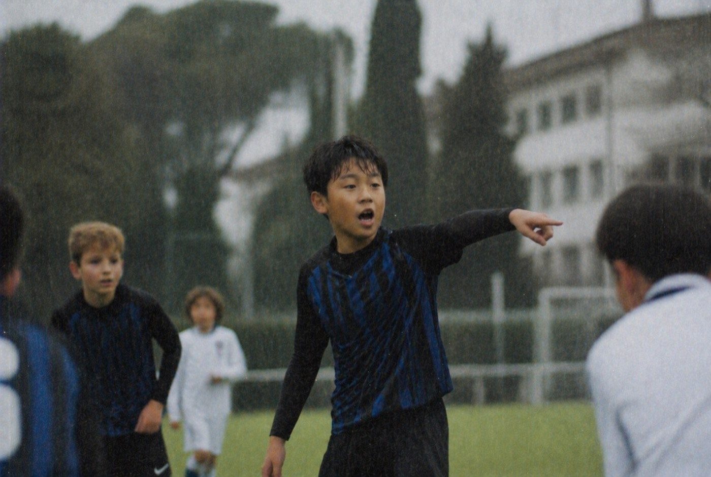
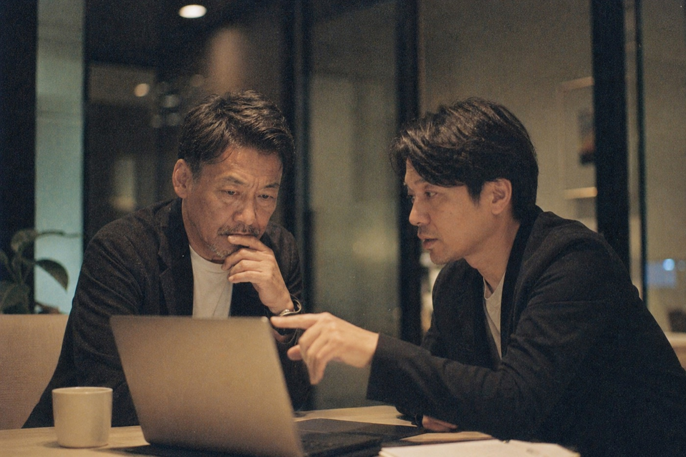
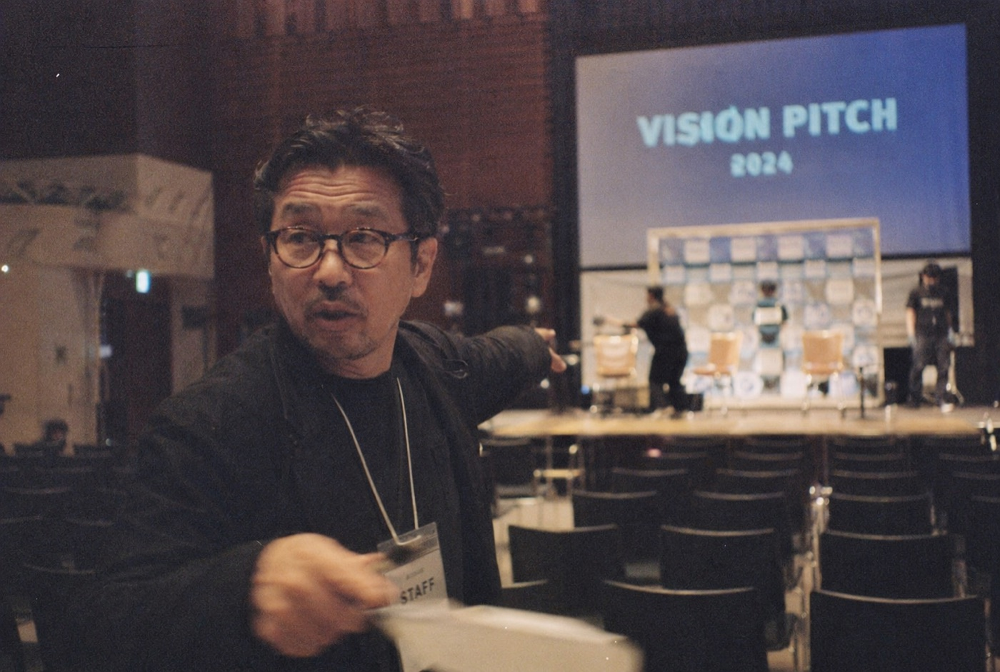
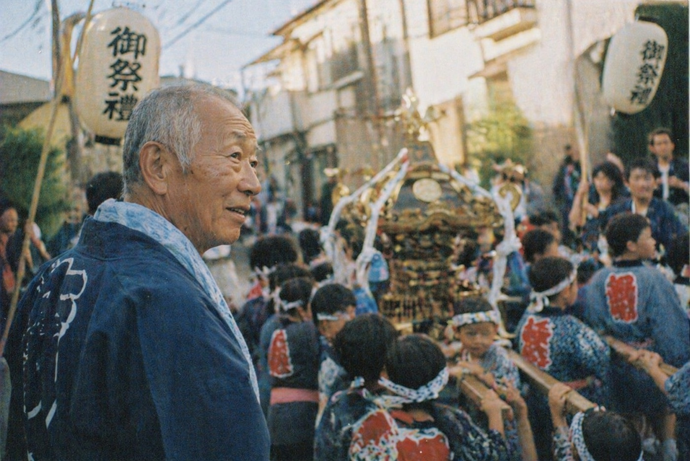
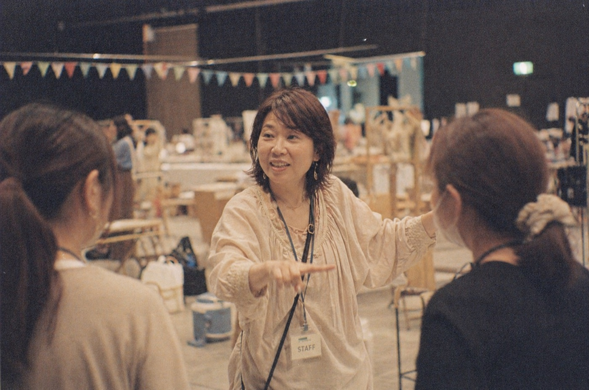

株式会社 plan8 は、
世界で最も多くの挑戦者を
応援することを、仕事にしています。
挑戦は、孤独な仕事です。資金・仲間・認知を、すべて自分で集めなければなりません。plan8 は、その孤独のとなりに立ちます。ストーリーを社会へ届け、資金との出会いを設計し、経営のとなりで次の一手を、ともに考えます。
plan8 は、ふたつの事業で挑戦者のとなりに立ちます。
ひとつは、まだ知られていない挑戦者のストーリーを世に届けるメディア。
もうひとつは、経営者の横で決断を分かち合う伴走。

起業家、経営者、社内の新規事業担当者、イベント主催者、自治会長、放課後に挑むスポーツ少年、コミュニティを束ねるリーダー、現場で日々を積み重ねる職人や働き手 —
年齢も立場も規模も問わず、その挑戦のストーリーを束ねた季刊フリーペーパー。
誌面の主役は肩書きではなく、いまその人が向き合っている挑戦そのもの。
背景にある想い・軌跡・これからの計画まで丁寧に取材し、読み手には「応援したくなる読み物」、企業には「共創候補のカタログ」として届けます。
ひとつの誌面で、地域の挑戦と社会の応援を結び直していきます。

新規事業の企画、既存事業の変革と効率化、AI・テクノロジーの活用、M&A・業務提携・共創、資金調達と運用、マーケティング、経営者へのメンタリング —
点ではなく、経営視点でまるごと寄り添う、外部の変革担当責任者です。
知識だけでなく、自分自身でリスクを取って経験してきた当事者として、失敗も含めて、同じ目線でチームになります。
中小企業の経営者の右腕として、大企業の事業企画メンバーとして、スタートアップの顧問として — 立場や規模を問わず、
ひとりで考える時間を、チームで考える時間に変えていきます。
UNFOUND は、地域に生きる挑戦者ひとりひとりの物語を束ねた、季刊のフリーペーパー。誌面の主役は、肩書きや会社の規模ではなく、その人が「いま、なにに挑んでいるのか」です。
たとえば、新しい事業を立ち上げる起業家。次の柱を育てようとする経営者。社内で新規事業を背負う担当者。あるいは、街でイベントを主催する人や、現場で日々を積み重ねる働き手たち。社会人にかぎりません。地域を引っ張る自治会長、放課後に夢中になる子ども、コミュニティを束ねるリーダー、勝負のなかで自分を更新するスポーツ選手 — 年齢も、立場も、規模も問いません。挑戦している、そのことだけが共通点です。
大切にしているのは、その挑戦の背景にある想い・これまでの軌跡・これからの計画まで丁寧に束ねること。読んだ方が「会いに行きたい」「応援したい」と感じられる誌面をつくります。
誌名の UNFOUND は「まだ見つかっていない」という意味の英語。挑戦している人は、まだ世に見つかっていないだけで、確かにそこにいる。その存在を、誌面を通じて見つけ出していきます。
刷り上がった冊子は、地域のお家のポストまでお届けします。
UNFOUND が伝えたい挑戦者は、ひとつの肩書きには収まりません。これから誌面で取り上げていく方々の、ほんの一例です。

一からビジネスを立ち上げる人。次の柱を育てようとする経営者。社内で新しい挑戦を背負う事業企画の担当者。

祭りや町内会、地域の任意団体。世代を超えて、街の関係を結び直していく人。文化や暮らしの担い手たち。

マルシェ、ワークショップ、ライブ、フェス。手を動かしながら、場と関係をつくっていく挑戦者たち。
勝ち負けの先で、昨日の自分を更新していく人。年齢に関係なく、挑戦は同じ重さを持つ。
このほかにも、表現者・職人・研究者・福祉や教育の現場で動く方々など、地域でなにかに挑む人ならどなたでも誌面の主役になり得ます。「この人を取り上げてほしい」というご推薦も歓迎しています。
生活者にとっては地域の挑戦者を深く知ることができる読み物として。企業にとっては協賛・協業候補の挑戦者を探すことができるカタログとして。ひとつの誌面が、ふたつの役割を同時に果たします。
わたしたちが楽しむイベント、スポーツ、音楽、カンファレンス — その多くは、スポンサー資金で支えられています。意外なほど大きな器が、身近な挑戦を下支えしています。
挑戦している方は、街にとってもっとも身近な希望です。UNFOUND は、その想い・背景・軌跡を丁寧に束ねる誌面。単なる紹介ではなく、読み手が「応援したい」と感じる文脈ごと、あなたのストーリーを届けます。取材も掲載も、すべて無料です。挑戦している方ご本人にも、ご家族・チーム・関係者にも、費用のご負担をいただくことはありません。どうぞお気軽にお問い合わせください。
取材・掲載はすべて無料です。編集は plan8 が担当します。次号の掲載締切・取材日程についてはお問い合わせください。
「この人・この挑戦を取り上げてほしい」という推薦も歓迎です。ご自身の挑戦でなくても、周りで応援したい挑戦者がいれば、推薦フォームから教えてください。子どもの挑戦、ご近所の取り組み、所属チームの仲間 — どなたのご推薦も大歓迎です。
UNFOUND への掲載だけでなく、挑戦者・イベント主催者のスポンサー獲得そのものも、plan8 が併走します。どの企業にどう声をかけると接点が生まれやすいのか、過去の協賛実績をもとに、相性の良い候補先を一緒にリストアップし、打診の進め方までご相談に乗ります。
それができる理由は、わたしたち自身が 大分県における過去30年分の協賛データ を保有しているからです。どの企業が、どのイベントに、どれくらい協賛してきたか — 約 7万レコード／1万社のスポンサー企業 に及ぶ履歴を、独自のデータベースとして蓄積しています。
「このテーマの挑戦に、過去10年で協賛してきた企業はどこか」「業種ごとの協賛傾向はどうか」といった問いにも、データで答えられます。挑戦者のスポンサー獲得を、勘と人脈だけに頼らない形で支えていきます。
大分県以外の地域の挑戦者・イベントについても、スポンサー獲得のご相談を承ります。各地域の協賛データをもとに、相性の良い候補先の洗い出し・打診の設計までお手伝いすることが可能です。ご興味のある主催者・自治体・地域団体の方は、お気軽にお問い合わせください。
初号は大分県中心地を中心に、1号あたり10万部を発行。一般家庭へのポスティングに加え、掲載関連企業・そのスポンサー企業・飲食店・ホテル・自治体などへ設置します。家族内でのまわし読みを含めた推定リーチと、広告収益想定からの CPM をまとめています。
※ 推定値。大分県中心地の世帯構成・可処分所得分布および類似地域フリーペーパーの読者調査から算出。年齢・性別・属性は配布チャネルおよび誌面特性（地域の挑戦者・文化・食をめぐる読み物）を踏まえた推計です。
広告効果を測定する仕組みも導入予定。掲載QRコードの計測、読者アンケート（紙＋Web）、スポンサー別の来店・問い合わせ計測など、掲載後の反応を定量で把握できるトラッキングを標準提供します。
媒体資料（PDF）・掲載枠・料金プランをお送りします。次号のクロージング時期も合わせてご案内いたします。
CINO（Chief Innovation Officer ／ 変革担当責任者）は、本来は社内に置く役職です。plan8 はその役割を、外部の立場から引き受けます。新規事業の企画、既存事業の変革や効率化、AI・テクノロジーの活用、事業資産・強みの棚卸し、M&A や他社との業務提携・共創の企画、資金調達や資金の運用、マーケティング、メンタリング — 点ではなく、経営視点を持って業務変革に寄り添います。
plan8 は、知識だけではありません。これらを、失敗も含めて、実際にリスクを取って経験してきました。だからこそ、一般的なコンサルティング会社と相性が良くなかった方にも、同じ視点でチームとなり、前に進むことができます。
たとえば中小企業の経営者の右腕として、大企業の事業企画メンバーとして、スタートアップの顧問として。立場や規模を問わず、さまざまな視点から変革を担います。
中小企業の経営者の右腕として、大企業の事業企画メンバーとして、スタートアップの顧問として。立場や規模を問わず、経営視点で変革を担います。
月額制のご契約は 5万円／月 から。ご支援の範囲・稼働量・関わり方に応じて、個別にご相談のうえお見積もりします。単発のセッションや課題の壁打ちのみのご利用も可能です。
月額制のご契約（5万円／月〜）・単発のセッション・課題の壁打ち、いずれも初回のオンライン面談（30分／無料）からはじまります。現在の事業状況・いま悩まれていることを簡単にお書き添えください。
初回30分無料。オンライン／対面どちらも可能で、ご希望があればこちらからお伺いします。ご相談枠は月に数件まで。
plan8 のとなりには、それぞれの領域で挑戦者を支える外部パートナーたちがいます。ひとりでは届かない場所へ、つながりでご一緒します。
アライアンスプランナーは、挑戦者ストーリーマガジン「UNFOUND」にも毎号掲載され、地域の読者からも見つけていただける存在となります。
現在、初号掲載に向けた取材・編集を進めています。順次ご紹介していく予定です。アライアンスプランナーとしての参画にご関心のある方は、下記よりお気軽にご連絡ください。
plan8 とのアライアンス、またはアライアンスプランナーとしての参画にご関心のある方は、お問い合わせフォームからお気軽にご連絡ください。専門領域・ご経歴・ご興味を簡単にお書き添えいただけるとスムーズです。